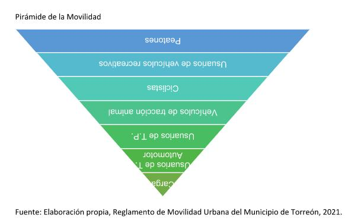
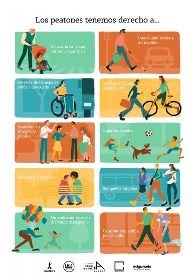
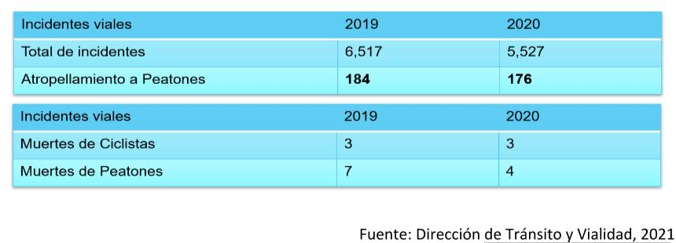

El 17 de agosto se celebra mundialmente el Día del Peatón, una fecha declarada por la Organización Mundial de la Salud (OMS) conmemorando el primer incidente de tráfico que cobrara la vida de una joven en Londres, Inglaterra.
La seguridad de un peatón al transitar por el espacio público debe ser prioridad de cualquier ciudad y ésta se encuentra respaldada por diferentes políticas como nuestra Carta Magna que desde octubre de 2020 integra el derecho a una movilidad segura.
Y es que el y la Peatón es el usuario más vulnerable a la hora de moverse, puesto que lo hace sin ninguna protección y utilizando únicamente la energía de la fuerza motriz de la persona a diferencia de los otros modos con los que comparte el espacio y en los que se hace uso de algún vehículo auto motor.
También es importante resaltar que el Reglamento de Movilidad Urbana del municipio de Torreón establece en su Artículo 2 como principio rector que se dará prioridad de uso del espacio a los usuarios más vulnerables de acuerdo a la siguiente jerarquía:
a) Peatones; en especial personas con alguna discapacidad y otros sectores de la población con necesidades especiales como: niños, adultos mayores y mujeres embarazadas; b) Usuario de vehículos recreativos; c) Ciclistas; d) Vehículos de tracción animal; e) Usuarios y prestadores del servicio de transporte de pasajeros masivo, colectivo o individual; f) Usuarios de transporte particular automotor; y g) Usuarios prestadores del servicio de transporte de carga.

El Peatón al ser el usuario con mayor prioridad en la pirámide de la movilidad cuenta con el respaldo de distintas políticas de carácter urbano, El 11 de agosto de 2014 la Liga Peatonal, una red de personas, colectivos y organizaciones dedicados a la promoción y defensa del efectivo ejercicio de los derechos del peatón, emitió la Carta Mexicana de los Derechos del Peatón.
Un peatón, de acuerdo con la Carta Mexicana de los Derechos del Peatón, es el andante del espacio público urbano, pudiendo ser mujer u hombre, niñas o niños, adultos mayores, personas con discapacidad, y en general, todas las personas sin importar su género, raza, etnia, orientación sexual u otra condición, que transite sin obstáculos por el espacio público.
En esta Carta se establece que los peatones tenemos derecho a:
- Cruzar la calle con calma y seguridad.
- Una ciudad hecha a mi medida.
- Servicio de transporte público adecuado.
- Centros urbanos organizados
Convivir en el espacio público
Jugar en la calle
- Mobiliario adecuado
- Banquetas amplias
- Un ambiente sano y a disfrutar del espacio
- Caminar con calma por la calle

A pesar de que existen organizaciones, estrategias y políticas dedicadas a ver por los peatones, su seguridad siempre se ve afectada; y que tal como lo conmemora el Día del Peatón los incidentes de tráfico cobran diariamente la vida de quienes se mueven por la ciudad de esta manera.
De acuerdo a un informe de peatones y ciclistas fallecidos en México en 2019 “Ni Una Muerte Vial”, elaborado por el colectivo Céntrico, un equipo de especialistas en planeación, diseño, implementación y evaluación de proyectos de movilidad urbana sustentable, a nivel nacional las cifras oficiales indican que entre 15 y 16 mil mexicanos fallecen cada año por atropellamientos, choques, caídas y volcaduras.
Una cifra alta de 12 fallecidos anualmente por cada 100 mil habitantes.
Dentro de este informe que tiene como fuentes la información de notas de prensa publicadas en sitios electrónicos de periódicos nacionales y locales, así como redes sociales, encontró que en 2019 se documentaron 2,957 fallecidos atropellados a lo largo del país de los cuales el 84% fueron peatones, el 15.2% ciclistas y el 0.8% restante caídos y conductores/pasajeros de vehículos motorizados, recreativos o de movilidad personal.
Dentro de este informe Torreón ocupa el lugar 31 de 50 ciudades con mayores fallecimientos de peatones y Gómez Palacio ocupa el lugar 33.
De acuerdo a datos de la Dirección de Tránsito y Vialidad en Torreón en 2019 se registraron 6,517 incidentes de los cuales 184 fueron atropellos a peatones, con 7 muertes registradas. Y al 2020 la cifra de incidentes fue de 5,527 con 176 atropellos a peatones y 4 hechos fatales.

En Torreón se cuenta con un total de 1.88 Km de calles peatonales, entre éstas se encuentran las Calles Cepeda y Valdez Carrillo con 184 metros entre las avenidas Hidalgo y Juárez y los 1.7 km del Paseo Morelos que contempla un cuerpo de la vialidad como peatonal.
Es importante destacar en el margen de la celebración que el Peatón como el usuario prioritario de la movilidad en la ciudad, debe poder transitar de manera segura disminuyendo los riesgos que su vulnerabilidad implica en relación con los otros modos con los que comparte las vialidades.
Tanto la ciudadanía, colectivos, funcionarios públicos, urbanistas y tomadores de decisiones, debemos estar comprometidos en buscar la mejoría de la ciudad continuando con la implementación de acciones, políticas y estrategias enfocadas en él para evitar poner en riesgo su vida.
FUENTES:
Reglamento de Movilidad Urbana del municipio de Torreón - http://normatividad.torreon.gob.mx/reglamentos-vigentes/reglamento-movilidad-urbana.html
Liga Peatonal – Carta Mexicana de los Derechos del Peatón,2014. https://ligapeatonal.org/wp-content/uploads/2014/08/Carta-Mexicana-de-los-Derechos-del-Peato%CC%81n.pdf
Céntrico – Informe de Peatones y Ciclistas Fallecidos en México 2019, Ni Una Muerte Vial.
http://niunamuertevial.mx/wp-content/uploads/2020/11/informe-NUMV-2019.pdf
Dirección General de Tránsito y Vialidad de Torreón.
Diainternacionalde.com https://www.diainternacionalde.com/ficha/dia-mundial-peaton